RT
Radiotherapy automation
Workflow tooling around treatment planning, plan review, dose metrics, SRS analytics and operational quality checks.
ESAPIC#ARIA
I’m Maximilian Grohmann — medical physicist and medical informatics specialist working where radiotherapy, patient safety, DICOM workflows, automation and applied AI meet real clinical constraints.
Hands-on engineering for clinical environments: pragmatic, safety-aware and close to real radiotherapy workflows.
Workflow tooling around treatment planning, plan review, dose metrics, SRS analytics and operational quality checks.
Clinical data pipelines for DICOM-RT, RTSTRUCT, dose grids, image geometry, export/import and robust data handling.
Applied AI and coding-assistant workflows with attention to validation, privacy, reproducibility and patient safety.
Connecting clinical reality with maintainable software, automation, documentation and data strategy.

A shareable visual summary inspired by clinical-imaging infographics, adapted to Max’s profile: radiotherapy automation, DICOM, clinical data strategy, AI validation and patient safety — with his portrait subtly integrated in the background.
A compact public overview. Details can grow over time, while project and publication data are refreshed automatically.
Department IT, automation, clinical workflow support and AI-focused tooling in Leipzig.
Clinical medical physics experience in radiotherapy with strong links to patient safety and technical workflow improvement.
Formal background in medical physics, bridging physics, medicine, computation and quality assurance.
Automatically refreshed from public GitHub repositories. Domain-relevant clinical tooling is prioritized.
DICOM RT plan management GUI for receiving, organizing and forwarding radiotherapy plan objects.
Framework for automated radiotherapy plan review with PQM evaluation, DVH visualization and failure-mode logging.
AI-powered tumor segmentation and treatment-planning-system data extraction for radiotherapy workflows.
Automatically refreshed from ORCID. Selected work covers radiation oncology, SBRT/SRS, AI autocontouring, patient safety and clinical practice.
If radiotherapy automation, medical imaging, patient safety or clinical AI workflows overlap with your work, these are the best public entry points.